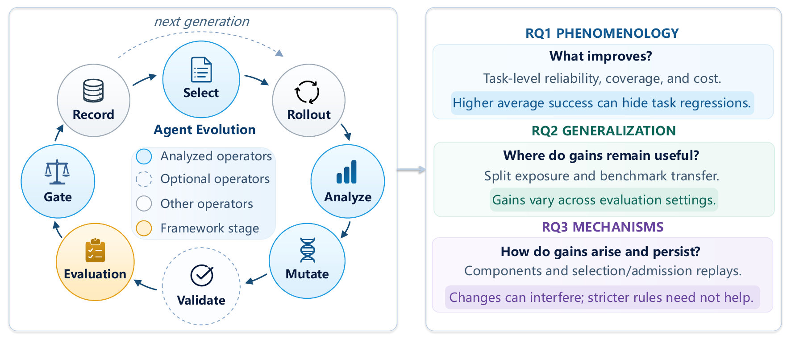
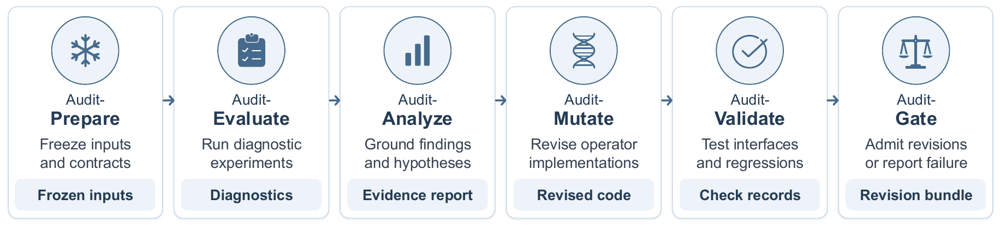

Under Review · arXiv 2026
Beneath the Surface: What We Overlook When We Talk About Agent Evolution
1 University of Science and Technology of China · 2 University of California, Berkeley · 3 Simple Agent Lab · 4 Beijing Institute for General Artificial Intelligence · 5 Shanghai Jiaotong University
* Equal contribution · † Corresponding authors
What can a higher score hide?
Consider a banking agent built with MiniSWE. After HyperAgents evolved its harness, the agent’s average success rate on τ³-Banking rose from 27.4% to 32.6%. Looking at which tasks it solved tells a fuller story.
- Average success gain
- +5.2 pp
- Newly covered tasks
- 13
- Previously covered tasks lost
- 10
We count a task as covered when the agent solves it at least once in eight attempts. All 16 evolved agents in our comparison gained coverage on some tasks and lost it on others. See the task-level results.
How we tracked change
The harness is the code and instructions around the language model. We kept the model weights fixed and tested four evolution methods (AHE, HyperAgents, A-Evolve, and GEPA). We ran each method on MiniSWE and Codex, using τ³-Banking for banking tasks and Terminal-Bench 2 for coding tasks.


- Cost. Eight of the 11 agents that became more reliable also cost more per attempt. An agent could still cost less to deploy if it reached the same coverage in fewer attempts.
- Transfer. When the banking agents moved to τ²-bench, seven of eight covered fewer tasks than their starting versions. When the coding agents moved to DeepSWE v1.1, seven of eight covered more.
- Parent selection. In each of four candidate pools, the agent with the highest starting score and the one whose descendants improved most on average were different agents.
From EvoAudit to Audit-Guided Evolution
EvoAudit uses archived runs to revise how an evolution method selects parents, diagnoses behavior, changes the harness, and decides which revisions to keep. One revision changes how ties are broken. When parents share the highest validation score and comparable task records exist, it favors the parent with fewer regressions from the starting agent.


We combined the four revisions in A-Evolve to create Audit-Guided Evolution (AGE). Its diagnosis uses records of tool calls, their outcomes, and whether the task finished. When proposing an edit, AGE checks which other parts of the harness depend on it. Its gate accepts a candidate that outscores its parent, or one that ties its parent at a verifiably lower evaluation cost.
Results across both benchmarks
Each method had 20 generations to evolve the harness. We then ran each task eight times with the selected agent. Average success is the percentage of attempts that succeeded. Coverage is the percentage of tasks solved at least once.
| Benchmark and harness | Average success | Coverage |
|---|---|---|
| τ³-Banking MiniSWE | 26.3 → 34.0 | 55.7 → 66.0 |
| τ³-Banking Codex | 28.1 → 38.1 | 57.7 → 67.0 |
| Terminal-Bench 2 MiniSWE | 68.0 → 71.8 | 86.5 → 89.9 |
| Terminal-Bench 2 Codex | 68.0 → 73.5 | 87.6 → 92.1 |
AGE improved both measures in all four comparisons. It also lost fewer of the starting agent’s tasks than A-Evolve in three settings and lost the same number in the fourth. Full results and costs in Table 10.
Conclusion
Before replacing an agent, it helps to know which familiar tasks it may lose, which new ones it can solve, and what it costs to reach the same coverage. These trade-offs change when the agent moves to another benchmark. The eight attempts in this study measure how reliably a fixed agent performs. Each AGE search used one random seed, so further searches would be needed to establish how often evolution finds the same improvements.
BibTeX
@misc{wang2026beneath,
title = {Beneath the Surface: What We Overlook When We Talk About Agent Evolution},
author = {Wang, Xiaobo and Wang, Zimu and Ye, Siyu and Li, Jiaqi and
Tang, Min and Bai, Jun and Shi, Yuling and Wang, Ruobing and
Zhang, Jingjing and Wang, Chaofan and Wu, Kai and Qi, Mengnan and
Cai, Kai and Gu, Xiaodong and Liu, Qi and Zheng, Zilong},
year = {2026},
eprint = {2611.07624},
archivePrefix = {arXiv},
url = {https://arxiv.org/abs/2611.07624}
}